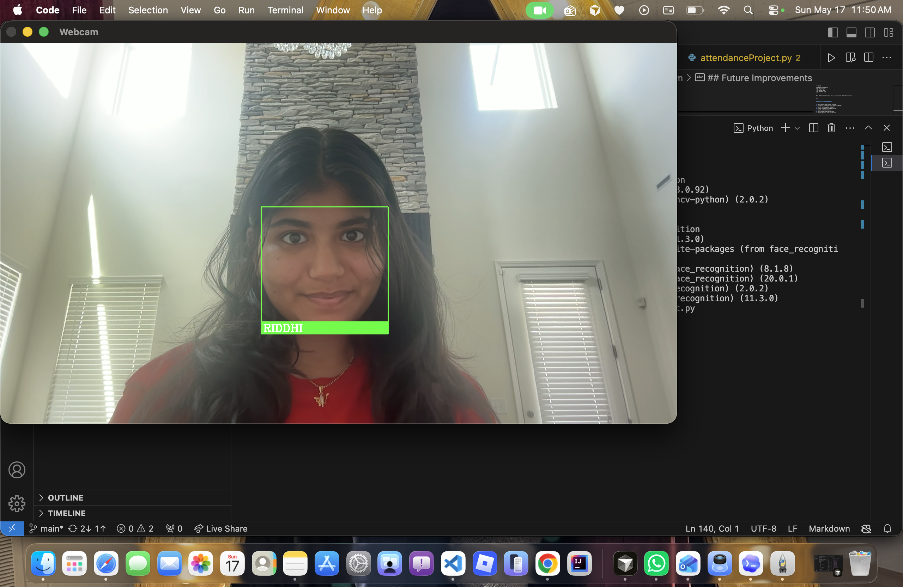
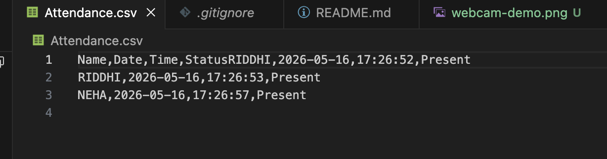

Real-time Detection
Uses a webcam feed to detect faces live and process attendance without manual entry.
Python • OpenCV • Real-time Attendance
A real-time face recognition attendance system that detects faces through a webcam, identifies registered users, and records attendance in CSV format.
Features
Uses a webcam feed to detect faces live and process attendance without manual entry.
Matches detected faces against known images using the face_recognition library.
Stores attendance records in a simple CSV file for easy review, sharing, and analysis.
Designed as a practical project with a clear dataset, recognition flow, and output file.
How It Works
The system reads stored images, extracts face encodings, and prepares them for matching.
OpenCV accesses the camera and processes each frame to locate faces in real time.
Detected face encodings are compared with known encodings to identify the person.
Once recognized, the person is marked present and the record is saved in CSV format.
Screenshots

The system detects a face through the webcam, matches it with stored student images, and displays the recognized name in real time.

Recognized students are automatically logged into a CSV file with their name, date, time, and attendance status.
Technologies Used
Future Improvements
Add a web interface to view, filter, and export attendance records.
Move from CSV files to a database for stronger search and reporting.
Protect attendance data with login roles for admins and users.
Generate summaries for attendance percentage, dates, and student history.